Universidad Don Bosco · Desarrollo de Software Empresarial · Grupo teórico G01T
●Trips SV
Manual del Usuario
Guía paso a paso para visitantes, usuarios registrados y administradores
Integrante
Carné
Alberto Ramos Cruz
RC220772
Moises Alonso Marroquin Ayala
MA220150
Rene Eduardo Hernandez Castro
HC220857
Rafael Adolfo Ruiz García
RG210380
San Salvador, 30 de septiembre de 2026
Contenido
Introducción
Navegación general
Explorar destinos (todos los usuarios)
Crear una cuenta e iniciar sesión
Funciones del usuario registrado
Planificador de viajes
Funciones del administrador
Mensajes y errores
Preguntas frecuentes
1. Introducción
Trips SV es un sitio web para descubrir los destinos turísticos de El Salvador: playas, lagos,
montañas, sitios arqueológicos, pueblos y más. Puede explorar el catálogo sin registrarse; con una cuenta,
además puede calificar destinos, publicar reseñas, guardar favoritos y planificar sus viajes.
1.1 Tipos de usuario
Tipo
Qué puede hacer
Visitante (sin iniciar sesión)
Ver categorías y destinos, buscar, leer calificaciones y reseñas.
Usuario registrado
Todo lo anterior, más calificar, publicar reseñas, responder, guardar favoritos y crear itinerarios.
Administrador
Todo lo anterior, más administrar categorías y destinos, y moderar comentarios.
1.2 Requisitos
Un navegador actualizado (Microsoft Edge, Google Chrome, Mozilla Firefox o Safari) en computadora, tableta o
teléfono. El sitio se adapta automáticamente al tamaño de la pantalla.
2. Navegación general
La barra superior está disponible en todas las páginas y permanece visible al desplazarse.
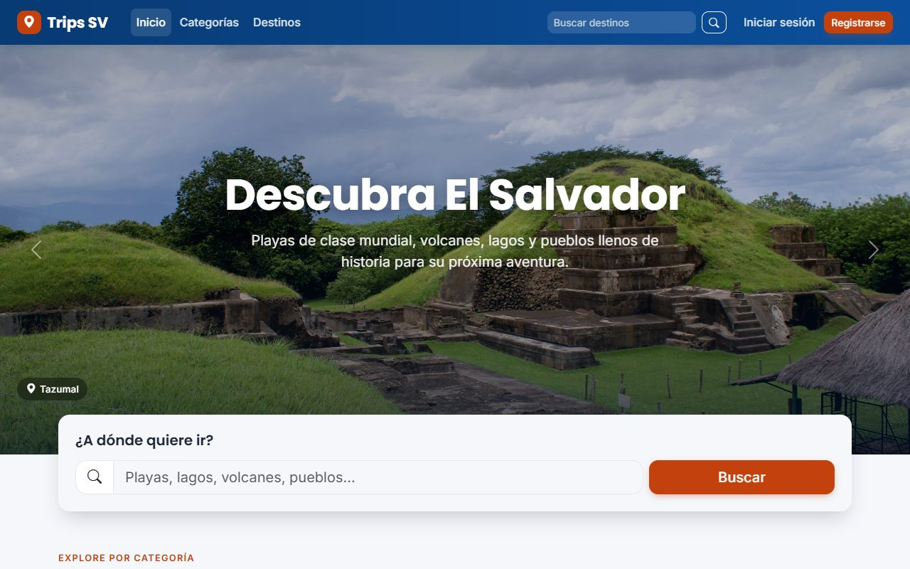
Figura 1. Página de inicio con la barra de navegación, el buscador y el acceso a la cuenta.
Elemento
Función
Logo Trips SV
Vuelve a la página de inicio desde cualquier lugar.
Inicio, Categorías, Destinos
Secciones principales. La sección actual aparece resaltada.
Cuadro Buscar destinos
Busca por nombre, lugar o tipo de destino desde cualquier página.
Iniciar sesión / Registrarse
Acceso a la cuenta. Con la sesión iniciada se reemplaza por su nombre de usuario.
2.1 En el teléfono
En pantallas pequeñas, el menú se agrupa en el botón de tres líneas de la esquina superior derecha.
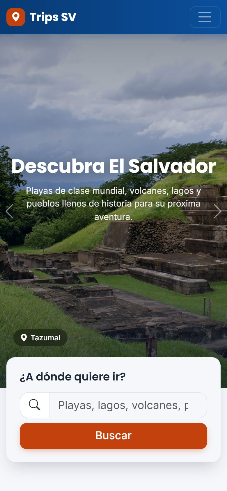
Figura 2. Vista en un teléfono.
3. Explorar destinos
3.1 Por categoría
En la página de inicio, desplácese hasta ¿Qué tipo de viaje busca?, o haga clic en Categorías en la barra superior.
Cada tarjeta muestra el nombre de la categoría y cuántos destinos tiene.
Haga clic en una tarjeta para ver sus destinos, ordenados de mejor a peor calificado.
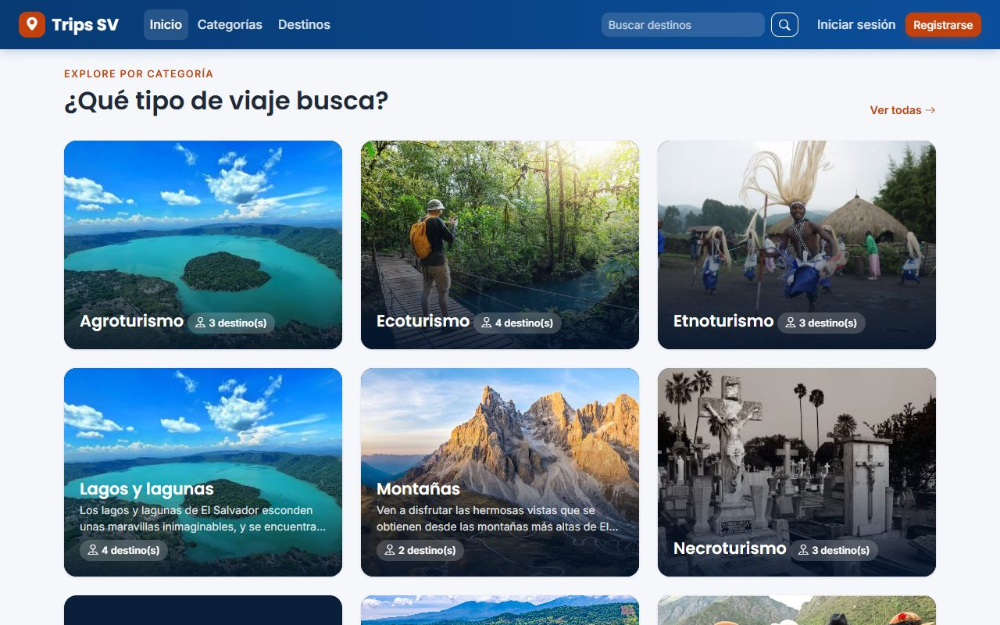
Figura 3. Categorías en la página de inicio.
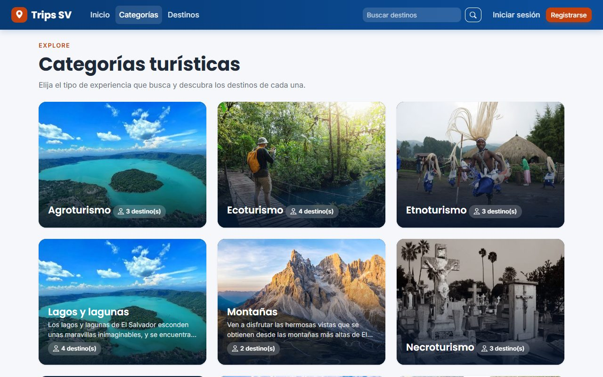
Figura 4. Página de categorías.
3.2 Buscar y filtrar
Escriba lo que busca en el cuadro de búsqueda (por ejemplo, lago, playa o Santa Ana) y presione Buscar.
En la página Destinos puede combinar filtros: Categoría, Departamento y Calificación mínima.
Use Ordenar por para ver primero los mejor calificados, los más votados, por nombre o los más recientes.
Presione Limpiar filtros para volver al catálogo completo.
No importa si escribe con o sin tildes ni mayúsculas: ceren encuentra Joya de Cerén. Si escribe varias palabras, se muestran los destinos que coinciden con todas.
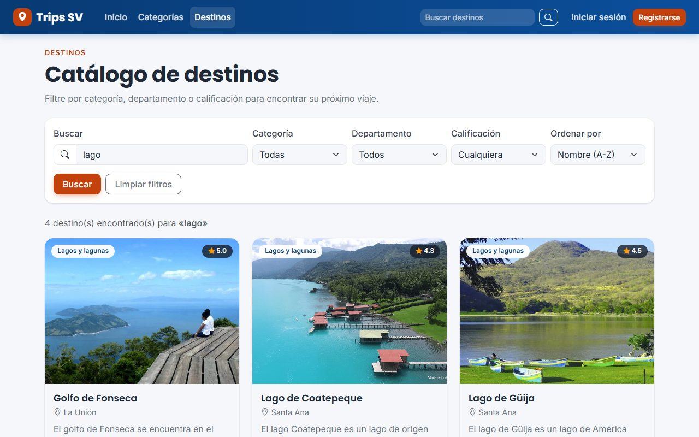
Figura 5. Catálogo de destinos con la búsqueda "lago" ordenada por nombre.
3.3 Ver el detalle de un destino
Haga clic en cualquier tarjeta de destino. El detalle muestra la ubicación, la categoría, la calificación promedio,
cuántas personas lo guardaron en favoritos, una descripción, la foto y la información completa (horarios,
recomendaciones y mapa, según el destino).
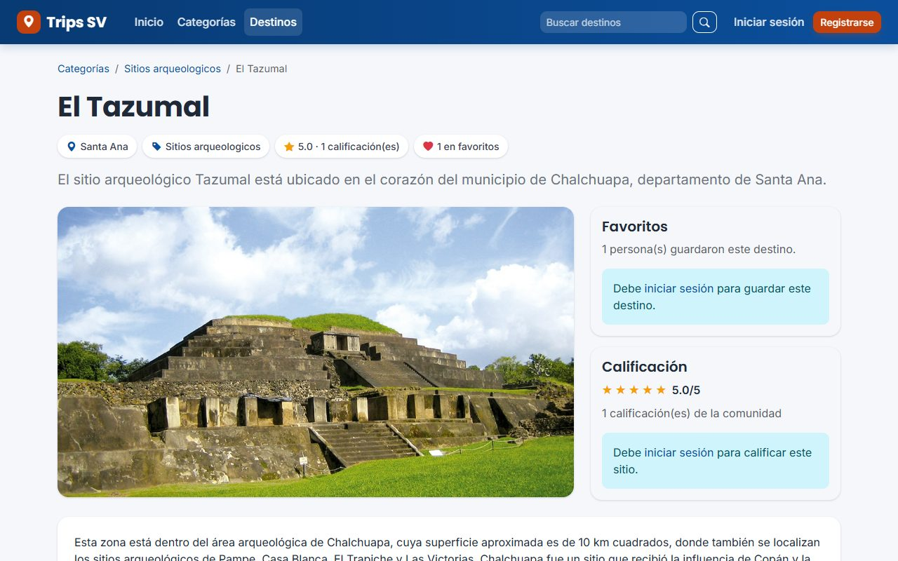
Figura 6. Detalle de un destino visto por un visitante.
3.4 Leer las reseñas
Al final del detalle están las Reseñas de la comunidad, con las respuestas agrupadas debajo de cada reseña.
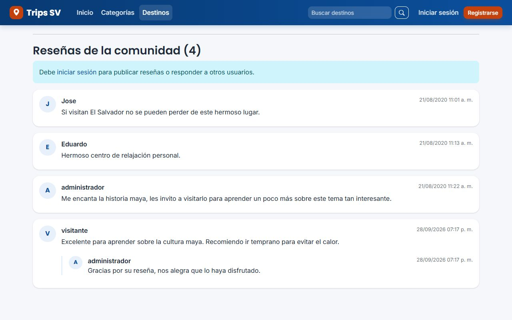
Figura 7. Reseñas de la comunidad. Para publicar hay que iniciar sesión.
4. Crear una cuenta e iniciar sesión
4.1 Registrarse
Haga clic en Registrarse en la barra superior.
Escriba un usuario (de 4 a 24 caracteres) y su correo.
Escriba una contraseña de al menos 8 caracteres que incluya un número y una letra minúscula, y repítala en Confirmar contraseña.
Presione Crear. Si todo es correcto, el sistema lo lleva a iniciar sesión.
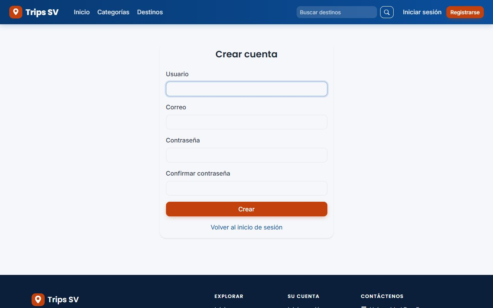
Figura 8. Formulario de registro.
4.2 Iniciar sesión
Haga clic en Iniciar sesión.
Escriba su usuario y contraseña. Marque Recordarme si usa su propio equipo.
Presione Entrar.
Por seguridad, después de 5 intentos fallidos la cuenta se bloquea durante 10 minutos.
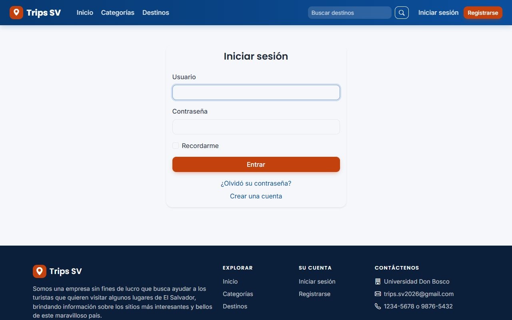
Figura 9. Inicio de sesión.
4.3 Recuperar la contraseña
En la pantalla de inicio de sesión, haga clic en ¿Olvidó su contraseña?
Escriba su correo o su nombre de usuario y presione Generar enlace de recuperación.
Abra el enlace generado, escriba la nueva contraseña dos veces y presione Cambiar contraseña.
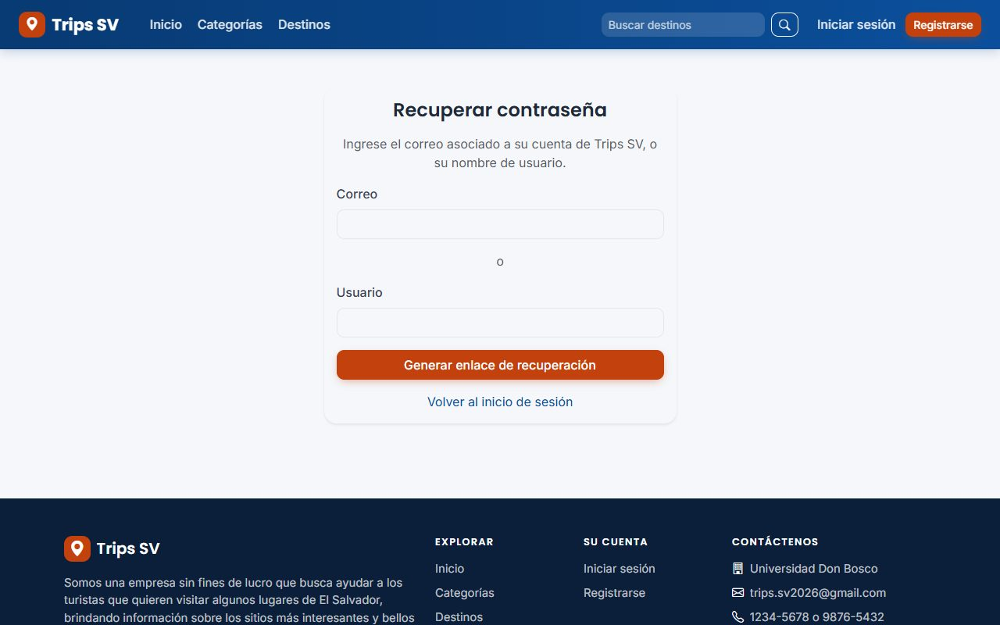
Figura 10. Recuperación de contraseña.
4.4 Menú de usuario y cierre de sesión
Con la sesión iniciada, su nombre aparece en la esquina superior derecha. Al hacer clic se despliega el menú con
Mis favoritos, Mis itinerarios y Cerrar sesión.
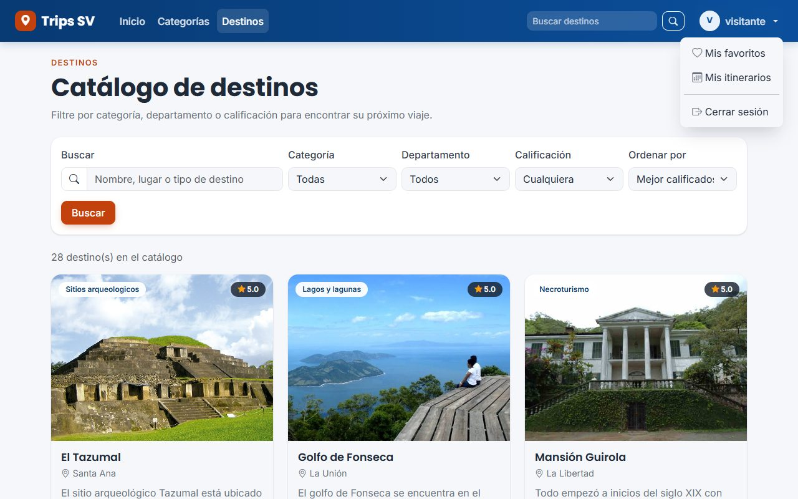
Figura 11. Menú de usuario desplegado.
5. Funciones del usuario registrado
Con la sesión iniciada, el detalle de cada destino muestra tres tarjetas a la derecha de la foto.
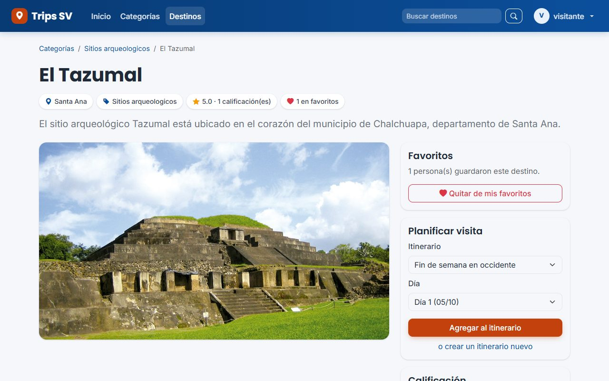
Figura 12. Detalle de un destino con las opciones de favoritos, planificación y calificación.
5.1 Guardar en favoritos
En el detalle del destino, presione Guardar en mis favoritos.
El botón cambia a Quitar de mis favoritos; presiónelo si quiere quitarlo.
Consulte todos sus destinos guardados en Mis favoritos, desde el menú de usuario.
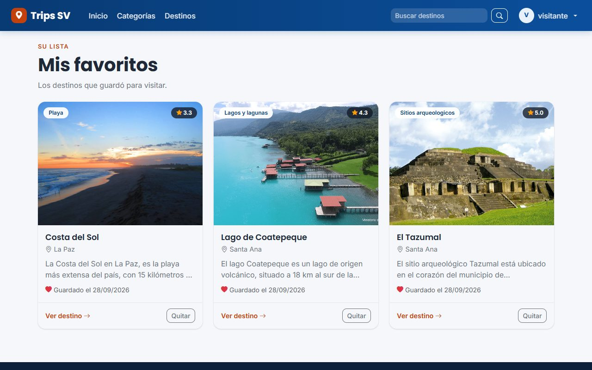
Figura 13. Mis favoritos, con la fecha en que se guardó cada destino.
5.2 Calificar un destino
En la tarjeta Calificación del detalle, elija de 1 a 5 estrellas.
Presione Calificar. El promedio del destino se actualiza al instante.
Si ya lo había calificado, el botón dice Actualizar mi calificación: cada usuario tiene una sola calificación por destino.
5.3 Publicar una reseña y responder
En Reseñas de la comunidad, escriba su opinión en Escriba su reseña y presione Publicar reseña.
Para responder a otra persona, presione Responder debajo de su reseña, escriba y presione Enviar respuesta.
Puede eliminar sus propias reseñas y respuestas con el botón Eliminar.
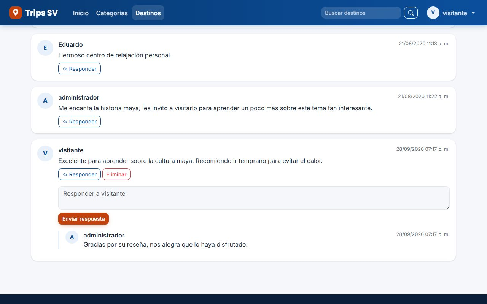
Figura 14. Una reseña con su respuesta y el cuadro para responder abierto.
6. Planificador de viajes
El planificador le permite organizar qué destinos visitará cada día de un viaje.
6.1 Crear un itinerario
Abra Mis itinerarios desde el menú de usuario y presione Nuevo itinerario. También puede empezar desde el detalle de un destino con Crear itinerario con este destino.
Escriba el nombre del viaje, la fecha de inicio y la cantidad de días (de 1 a 15). Las notas son opcionales.
Presione Crear itinerario.
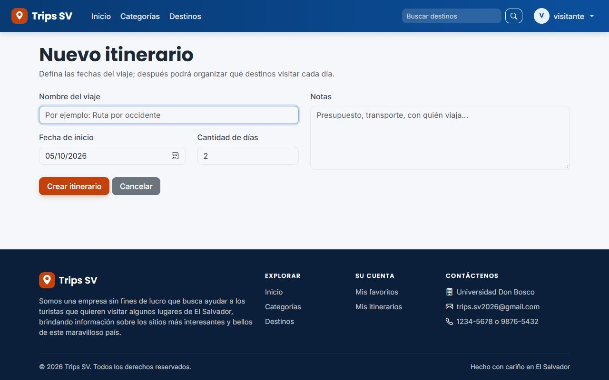
Figura 15. Formulario de nuevo itinerario.
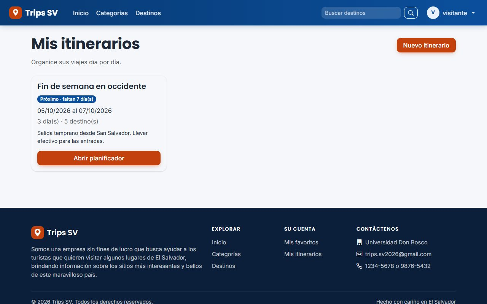
Figura 16. Mis itinerarios, con el estado de cada viaje: próximo, en curso o finalizado.
6.2 Organizar los días
Presione Abrir planificador en el itinerario. Cada día aparece con su fecha.
Para agregar un destino, elíjalo en Agregar un destino a este día… (sus favoritos aparecen primero), escriba una nota si quiere y presione Agregar.
Use las flechas ▲ y ▼ para cambiar el orden de visita dentro del día.
Use el selector Día de cada destino para moverlo a otro día.
Presione Quitar para sacarlo del itinerario.
Presione Imprimir para obtener una versión limpia en papel o PDF.
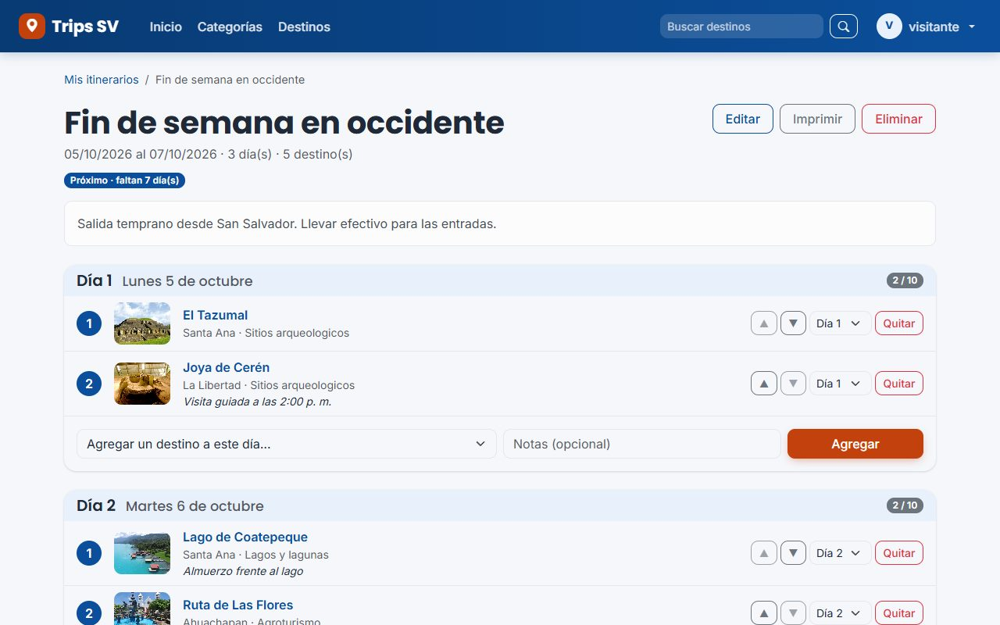
Figura 17. Planificador de un viaje de tres días.
También puede agregar un destino a un itinerario desde su página de detalle, con la tarjeta
Planificar visita: elija el itinerario y el día, y presione Agregar al itinerario
(figura 12).
Cada día admite hasta 10 destinos y no se puede repetir el mismo destino en un día. Para reducir la cantidad de días, primero quite o mueva los destinos de los días que dejarían de existir.
7. Funciones del administrador
Al iniciar sesión como administrador aparece el menú Administrar y la etiqueta Admin junto al nombre.
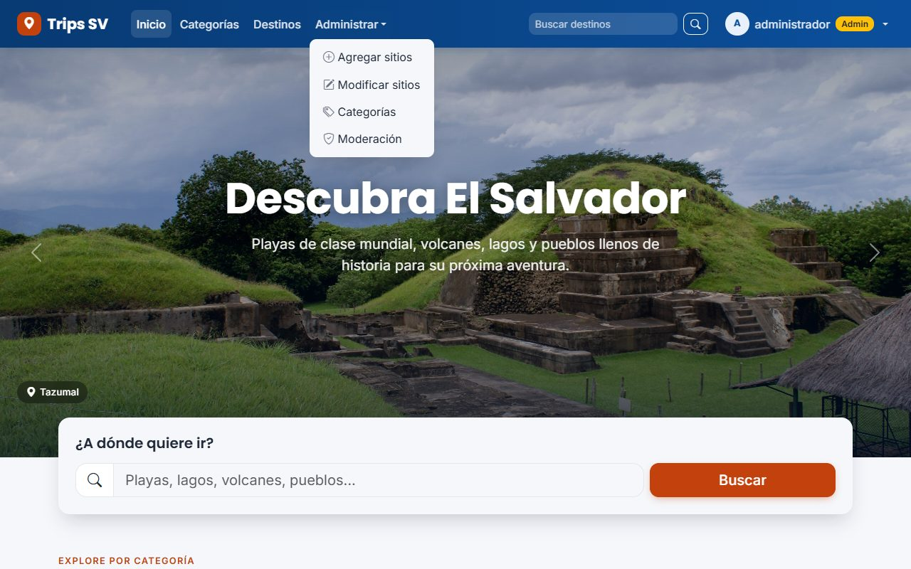
Figura 18. Menú de administración.
7.1 Gestionar destinos
Abra Administrar > Modificar sitios para ver la tabla de destinos con su imagen, calificación, ubicación y categoría.
Presione Editar para cambiar los datos de un destino, o Ver para abrir su página pública.
Para eliminar, marque la casilla de uno o varios destinos y presione Eliminar seleccionados. Se eliminan también sus reseñas, calificaciones y favoritos.
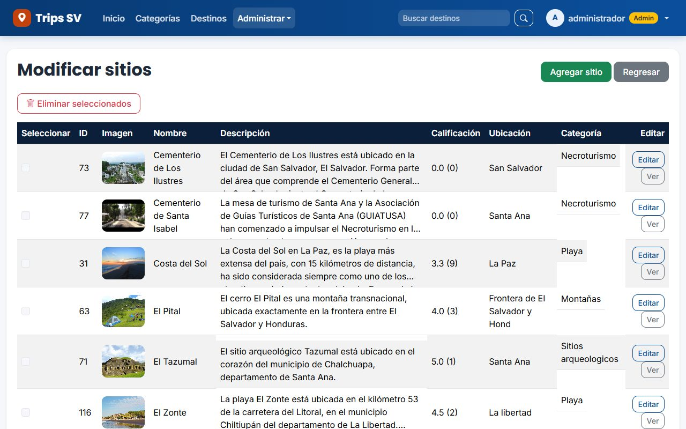
Figura 19. Tabla de destinos.
Agregar un destino
Abra Administrar > Agregar sitios.
Complete el nombre, la categoría, la ubicación y una descripción breve.
Elija una imagen JPG o PNG de hasta 5 MB.
Redacte la información completa en el editor (texto con formato, listas, enlaces, tablas y mapas embebidos de Google Maps).
Presione Agregar sitio.
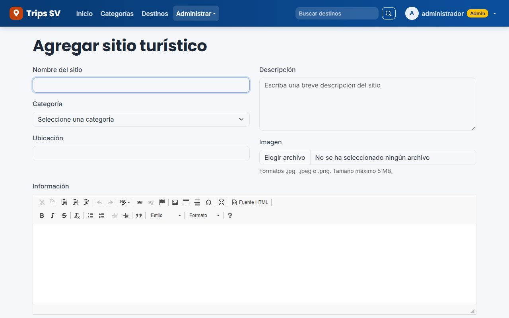
Figura 20. Formulario para agregar un destino con el editor de contenido.
Por seguridad, el sistema elimina del contenido cualquier código ejecutable y solo conserva mapas de Google Maps y videos de YouTube embebidos.
7.2 Gestionar categorías
Abra Administrar > Categorías. Puede buscar por nombre.
Presione Nueva categoría para crear una, con nombre, descripción e imagen.
Use Editar o Eliminar en cada fila. Una categoría con destinos asociados no se puede eliminar.
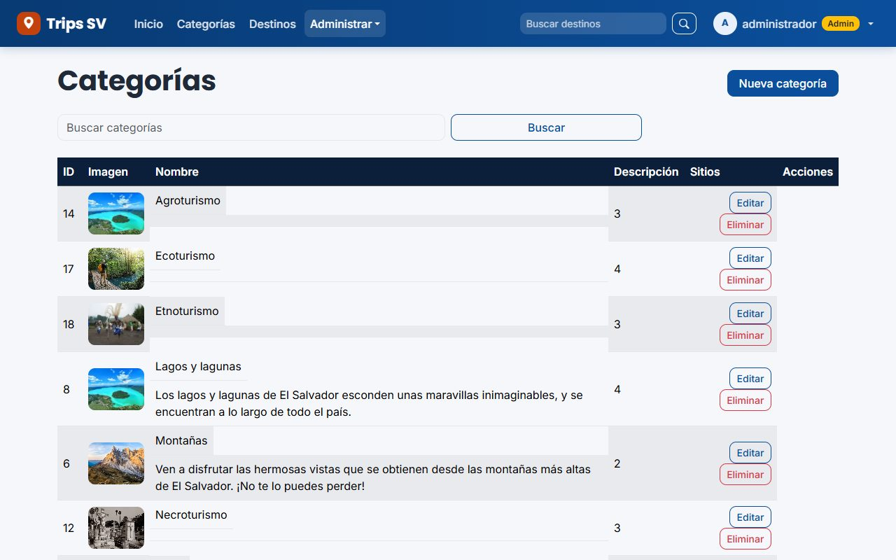
Figura 21. Administración de categorías.
7.3 Moderar comentarios
Abra Administrar > Moderación. Las tarjetas superiores muestran cuántos comentarios están visibles y ocultos.
Busque por texto, usuario o sitio, o marque Mostrar solo ocultos.
Presione Ocultar para retirar un comentario de la vista pública sin borrarlo (sus respuestas también se ocultan). Presione Mostrar para volver a publicarlo.
Presione Eliminar para borrarlo definitivamente junto con sus respuestas.
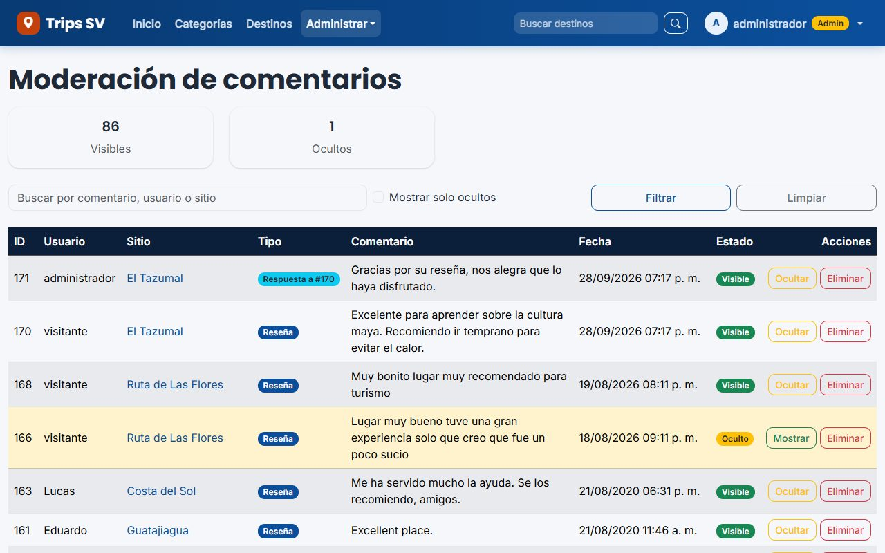
Figura 22. Panel de moderación.
8. Mensajes y errores
Después de cada acción aparece un mensaje en la parte superior: verde si se completó y rojo si hubo un problema,
con la explicación (por ejemplo, "Ya existe una categoría con ese nombre"). Los mensajes desaparecen solos después
de unos segundos.
Si abre una dirección que no existe, el sitio muestra una página con enlaces para volver:
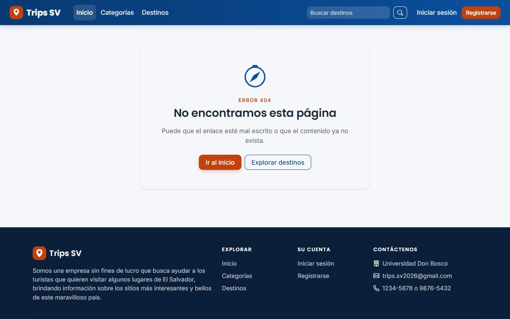
Figura 23. Página no encontrada.
9. Preguntas frecuentes
¿Necesito una cuenta para ver los destinos?
No. Todo el catálogo, las calificaciones y las reseñas son públicos. La cuenta solo es necesaria para participar y para usar favoritos e itinerarios.
¿Puedo cambiar mi calificación?
Sí. Vuelva a elegir las estrellas y presione Actualizar mi calificación; se reemplaza la anterior.
¿Otras personas pueden ver mis itinerarios o favoritos?
No. Solo usted puede verlos. Lo único público es el número total de personas que guardaron cada destino.
¿Por qué desapareció mi reseña?
Un administrador pudo haberla ocultado por no cumplir las normas de la comunidad.
Mi cuenta dice que está bloqueada.
Ocurre después de 5 intentos fallidos de inicio de sesión. Espere 10 minutos o recupere su contraseña.